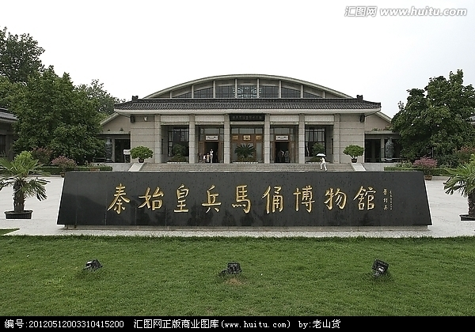
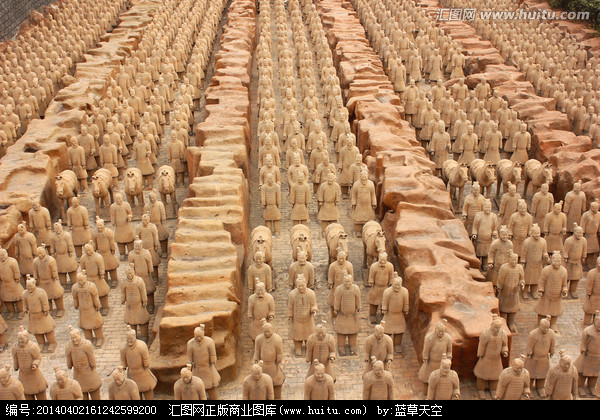
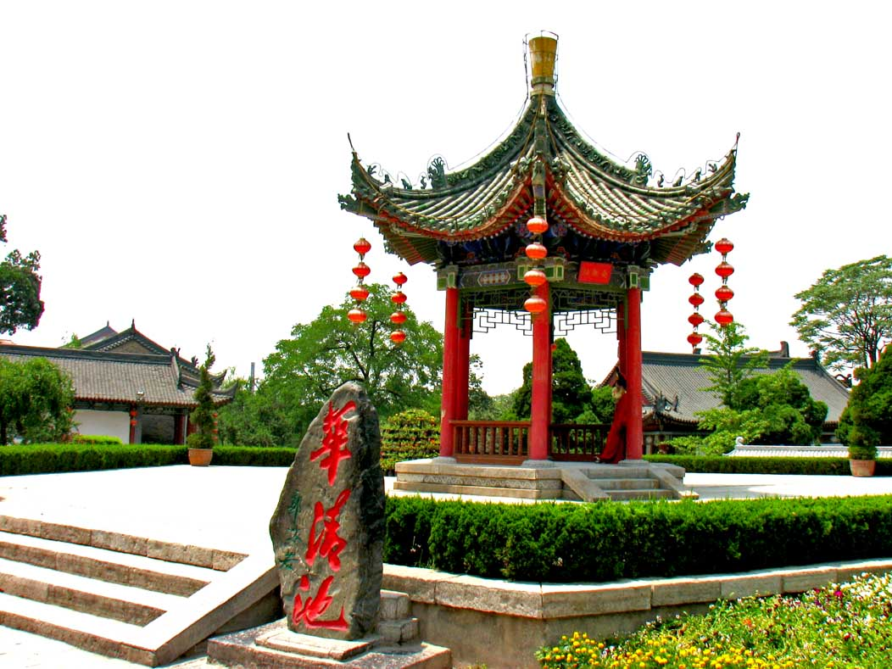
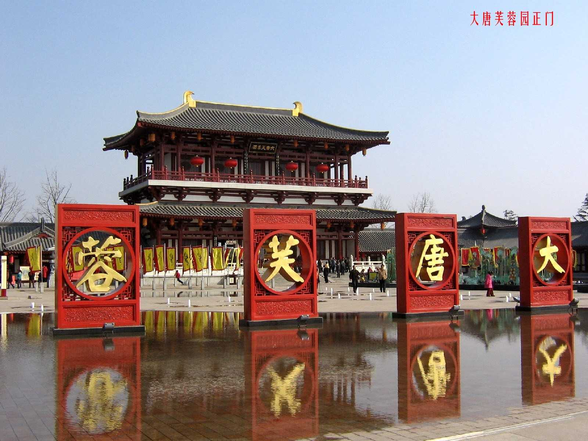
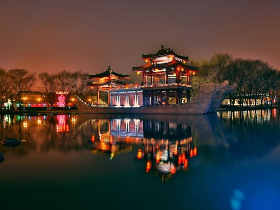
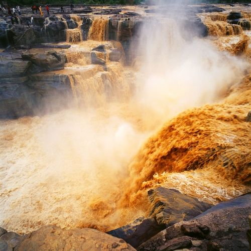
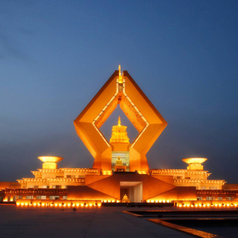
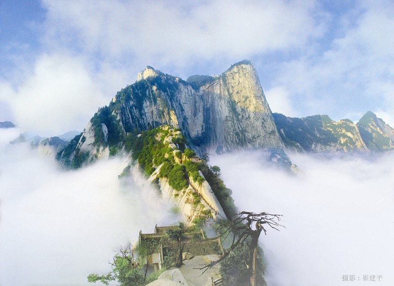

 
兵马俑（Terracotta Army；Terra-cotta Figures；soldier and horse figures），即秦始皇兵马俑，亦简称秦兵马俑或秦俑，位于今陕西省西安市临潼区秦始皇陵以东1.5公里处的兵马俑坑内。
华清池，亦名华清宫，位于陕西省西安市临潼区骊山北麓，西距西安30公里，南依骊山，北临渭水，是以温泉汤池著称的中国古代玄宫.


大唐芙蓉园位于陕西省西安市城南的曲江开发区，大雁塔东南侧，它是在原唐代芙蓉园遗址以北，仿照唐代皇家园林式样重新建造的，是中国第一个全方位展示盛唐风貌的大型皇家园林式文化主题公园，占地面积一千亩，其中水域面积三百亩。


